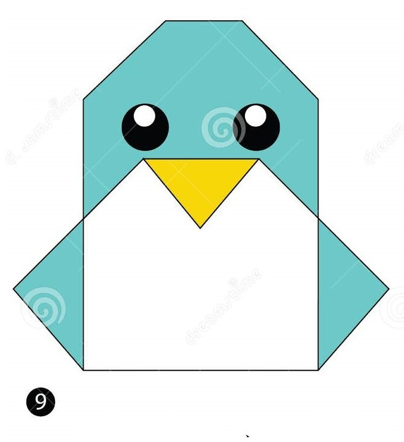

1. Start with the Paper: Begin with a square sheet of paper. If using origami paper, ensure the colored side is facing down.
2. Fold Diagonally: Fold the paper in half diagonally to form a triangle. Crease well and unfold.
3. Fold in Half Horizontally: Fold the bottom point of the triangle upwards to meet the top point, folding the paper in half horizontally. Crease well and unfold.
4. Fold the Top Corners: Fold the top layer of the top flap downwards along the creases to form the penguin's head. The corners should meet at the center crease. Crease well.
5. Fold the Bottom Flap Upwards: Fold the bottom edge of the paper upwards, aligning it with the bottom edge of the head. Crease well.
6. Fold the Side Corners: Fold both sides of the model inward along the existing creases to form the penguin's wings. Crease well.
7. Form the Feet: Fold the bottom corners of the model outwards to create the penguin's feet. Crease well.
8. Shape the Beak and Tail: Fold a small triangle at the bottom edge of the head to create the beak. Fold the bottom tip of the model upwards slightly to form the penguin's tail. Crease well.
9. Final Adjustments: Adjust the wings, beak, and tail to give your origami penguin its final shape and appearance.

1. Start with the Paper: Start with a square piece of paper. Fold it in half diagonally to form a triangle. Make sure the creases are sharp.
2. Fold the Top Point Down: Fold the top point of the triangle down to the bottom edge, creating a smaller triangle.
3. Fold the Bottom Corners Up: Take the bottom corners of the triangle and fold them upwards to the top point. This forms the turtle's front legs.
4. Fold the Side Corners In: Fold the side corners of the triangle inwards, creating the turtle's shell and back legs.
5. Shape the Head and Tail: Fold the top point of the triangle down to form the turtle's head. Fold a small triangle at the bottom edge to create the tail.
6. Final Adjustments: Adjust the legs, head, and tail to give your origami turtle its final shape and appearance.